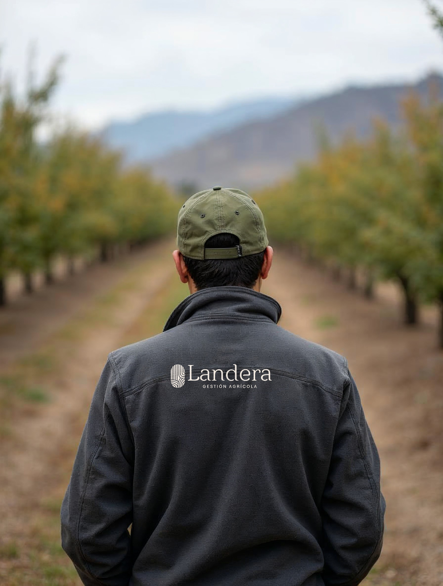
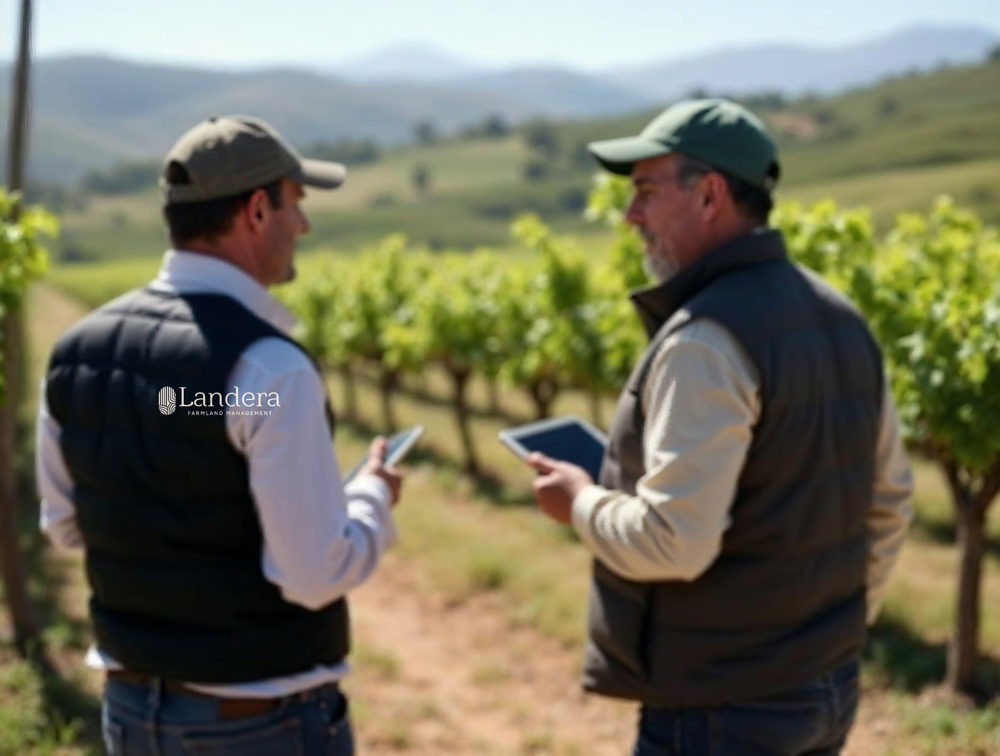
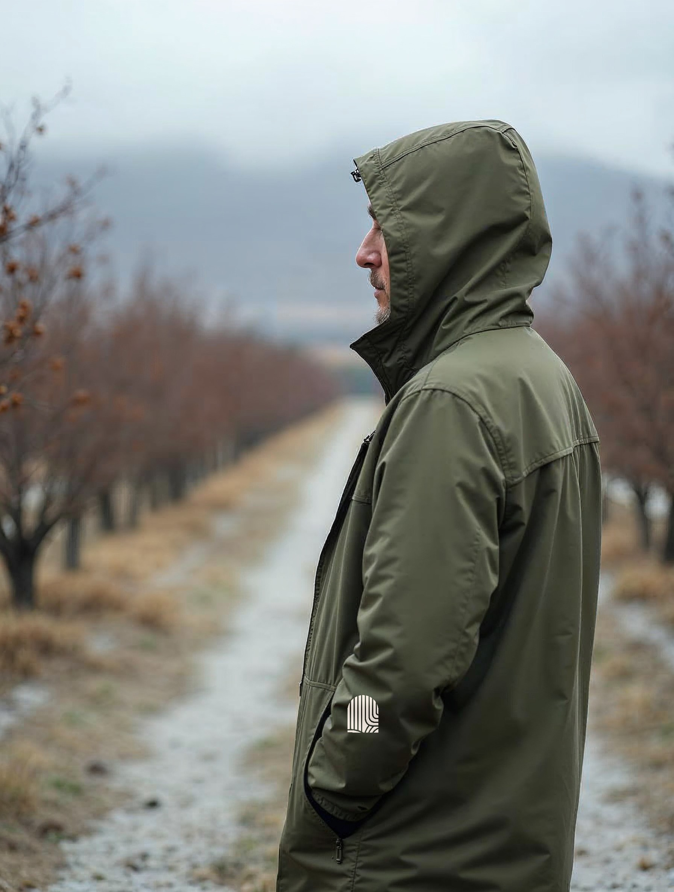
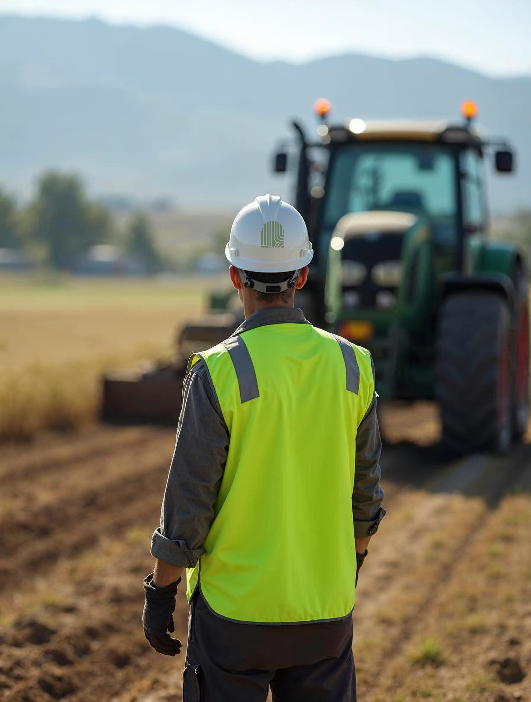

Vestuario: por situación de uso, no por prenda
Ropa que se usa, no que se regala
Cuatro situaciones: terreno, gerencia y visita, invierno, seguridad. Cada una dice qué prenda, dónde va la marca, a qué tamaño, en qué versión, de qué color y con qué técnica.
La regla común
Se borda el isotipo a una tinta: verde sobre prenda clara, crema sobre oscura. Al pecho izquierdo, 6 cm.
El logotipo completo va sólo en la espalda, a 24 cm, una tinta, bordado o serigrafiado. Con la bajada que corresponde a quien lo viste.
Prendas en verde oliva, gris carbón o crema. Nunca terracota: en terreno es el color de la señal de seguridad.
Seguridad
El chaleco reflectante y el casco son equipo normativo: el chaleco no se marca; el casco lleva el isotipo verde en vinilo, 4 cm, y nada más.

Terreno
| Prenda | Polar gris carbón · jockey oliva · camisa crema |
| Marca | Espalda: logotipo 24 cm · pecho: isotipo 6 cm |
| Versión | Gestión Agrícola · una tinta crema |
| Técnica | Bordado |

Gerencia y visita
| Prenda | Chaleco gris carbón sobre camisa crema |
| Marca | Espalda: logotipo 24 cm · sin marca al frente |
| Versión | Farmland Management · crema |
| Técnica | Bordado |

Invierno
| Prenda | Cortaviento con capucha, verde oliva |
| Marca | Pecho izquierdo: isotipo 6 cm · espalda: logotipo 24 cm |
| Versión | Gestión Agrícola · crema |
| Técnica | Bordado; serigrafía si la tela es impermeable |

Seguridad
| Prenda | Casco blanco · chaleco reflectante normativo |
| Marca | Casco: isotipo 4 cm · chaleco: nada |
| Versión | Isotipo verde, una tinta |
| Técnica | Vinilo, nunca bordado |
Lo que no se hace
Logotipo completo a color al pecho, en prenda de catálogo: eso es merchandising.
Prenda terracota. En terreno el terracota es de la señal de seguridad, no de la ropa.
Invariables
Variables
⚠ Escenas de referencia generadas; el bordado se montó por código — la muestra física se aprueba antes de producir
38 · Terreno
Landera · Manual de marca